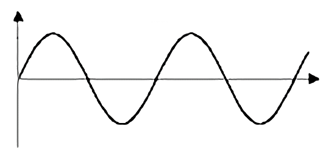

Fisicamente un suono è rappresentato come un'onda (onda sonora) che descrive la variazione della pressione dell'aria nel tempo.
R. Grafica
Sull'asse delle ascisse viene rappresentato il tempo e sull'asse delle ordinate viene rappresentata la variazione di pressione corrispondente al suono stesso.
Quindi i suoni consistono in vibrazioni che formano un’onda, la cui ampiezza misura l’altezza dell’onda e il periodo è la distanza tra due onde.
L'intensità e La frequenza
L’intensità del suono descrive l’ampiezza delle variazioni dell’onda sonora e si misura in decibel(DB)
La frequenza è il numero di periodi (o di vibrazioni) al secondo e si misurano in Hertz(Hz).
Curiosità
L’orecchio umano e’ sensibile alle frequenze tra 20 e 20000Hz...
Per Fissare Meglio Le idee...
Clicca il bottone "Muovi" per far muovere l'onda sonora qui sotto:
Il Campionamento
In Generale
per registrare un suono e memorizzarlo sul computer si usa la tecnica del campionamento.
Infatti un file viene prodotto suddividendo un’onda acustica in moltissimi frammenti e memorizzando ogni frammento come un piccolo campione digitale del suono.
Rapporto fra il campionamento e la precisone
Tanto maggiore è il numero di campioni che vengono presi ogni secondo, tanto maggiore sarà la precisione con cui nel computer sarà rappresentata la forma d’onda.
Per Fissare Meglio Le idee...
Non hai capito bene la tecnica di campionamento?...non c'è problema, prova questo:
1
3
2
4
5
Elementi Campionati:
Frequenza Di campionamento
Il numero di campioni registrati al secondo si dice frequenza di campionamento.
Frequenza delle schede audio
· 11 KHz(11.000 campioni/sec.)
· 22 KHz(22.000 campioni/sec.)
· 44 KHz(44.000 campioni/sec.)
Maggiore è il numero di KHz maggiore sarà lo spazio occupato su disco...
Per Fissare Meglio Le idee...
E tu quanti campioni vorresti...campionare?

Dimensione Di Campionamento
Un altrofattore che influenza la qualità del suono è la dimensione di campionamento (quantizzazione), ossia il numero di bit disponibili per memorizzare ciascun campione d’onda.
4 Bit ---------> Si distinguono 16 valori
8 Bit ---------> Si distinguono 256 valori
16 Bit ---------> Si distinguono 65.536 valori
Quantizzazione e La Codifica
Un dispositivo (detto ADC Analog-Digital converter):
trasforma impulsi elettrici (i campioni) in una sequenza di numeri
Il numero di bit destinati alla rappresentazione dei valori numerici ripartisce i valori di tensione in un insieme di livelli discreti:
Esempio con 8bit (1byte) si distinguono 256 livelli di tensione
Esempio con 16 bit (2byte) si distinguono 65356 livelli di tensione
Spazio Occupato
Esempio 1
1 secondo di voce umana a 8000 campioni al secondo, campionata a 8 bit richiede 64.000bit = ~8KB
Esempio 2
1 secondo di musica qualità CD richiedono (2 canali stereofonia): 2 x 44.100 x 16= 1.411.200bit = ~ 175KB 1 minuto di musica richiede quindi 10.584.000 = ~10MB
TEST
Per sbloccare la sezione "Video", devi prima rispondere alle domande seguenti:
·Il suono è rappresentato come un onda...?
·La frequenza si misura in?
·Tanto maggiore è il numero di campioni, tanto maggiore sarà la...?
·"11 KHz" corripondono a qaunti campioni al secondo(in numero)?
Benvenuto!
Gentile, Studente...ti diamo benvenuto nella parte "Suoni" del nostro percorso!.
ATTENZIONE!
Gentile, Studente...sei sicuro di voler continuare con il test?(NON potrai ritornare indietro)